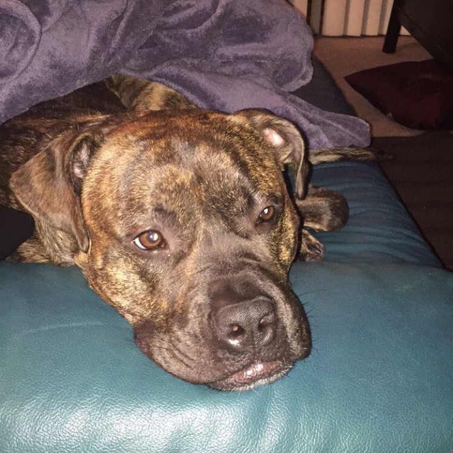
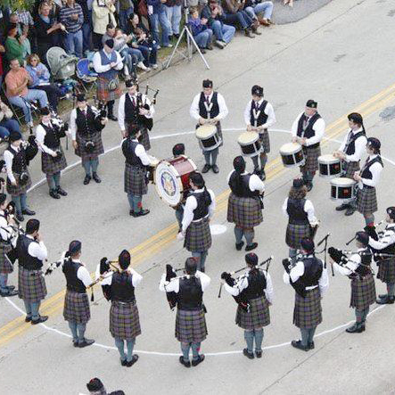
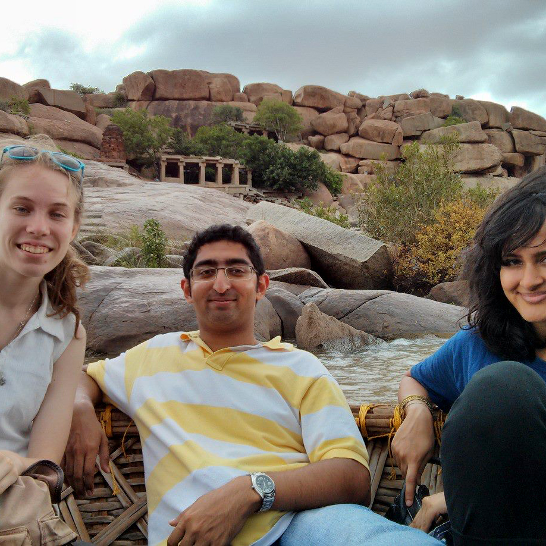

I am seeking a full-time job as a Software Engineer. Primarily, I am looking for either a position in Front End or Full Stack Web Development. If you think I might be a good fit for your team, please feel free to reach out and download my resume below.
Professionally
I am a Software Engineer with a focus in Front End Web Development. Since graduating form Carnegie Mellon University in 2014, I have been working at various startups. I started at 4moms and then spent some time at Forever Inc before heading to my current company, VacayHome Connect.
At VacayHome Connect, I was the second Software Engineer to join the company and the first Front End Developer. Being one of the first developers came with a lot of opportunities and responsibilities. Soon after starting, the product team began working on a new application aimed to revolutionize the vacation rental distribution industry through automation. I first took on the responsibility of researching and determining the frontend framework for the application. Given the requirements, Angular 6 was chosen (currently we are on Angular 8 and continue to update as new versions come out). I quickly learned Angular and TypeScript and began structuring the application. Given the magnitude of this project, I worked closely with a few offshore developers while leading the efforts to hire an onshore frontend software team. I now manage an in house team of 2 developers and 1 intern. Over the course of this project, I was a primary contributor and leader in developing standards and processes. This application is currently in production with new and updated features being added regularly. I have additionally envisioned and brought to fruition a company operational dashboard app and several cultural initiatives. Some highlighted initiatives include adding a snack shop in the office where money goes to new charities each quarter and unique employee faceplates identifying individuals' workspaces.
While at Forever Inc, I served as the sole Software Engineer on the Design team. This means that I acted as a liaison between the Designers and Engineers as well as aided the designers that were writing browser code. When I joined the company, Forever was in the middle of a massive project to merge their marketing website and shopping website. This project was also a responsive redesign. I was able to meaningfully contribute to both frontend and backend code on this project by my third day on the job. The next large project was a complete remake of Forever's primary product application. Being on the project from the very start allowed me to make vital frontend architectural decisions. I also quickly learned Vue.js, the newly-chosen frontend framework. As company culture was very important to me, I planned and organized a company-wide egg scavenger hunt and ugly sweater competition. I also led a project to create a company yearbook. All of which was worked on outside of regular working hours. Lastly, I added fun twists to otherwise mundane team rituals such as a team unity clap after standups.
During my time at 4moms, I primarily worked on the consumer websites 4moms.com and global.4moms.com, as well as the eCommerce website shop.4moms.com, totalling 19 websites. I played a significant role rebuilding all 19 sites to be responsive. This increased mobile traffic by 45% and mobile conversion rate by 25% within 6 weeks of completion of implementation. I also created a web application that automated documentation of product information coming off of the assembly line. This site functioned offline using application cache and local storage. 4moms went from capturing 0 to 15,000 product assemblies per month without a cost increase.
Personally
I am a detail oriented, truth telling, left-brain math enthusiast with just enough of right-brain creativity to balance out my technical skills for the perfect balance.
I am passionate about putting in a good days work so that I can come home to my 6 year old puppy and play a fun game of tug a war or take a quick weekend trip to anywhere in the world. I enjoy volunteering and helping others as well as love learning about other cultures. Learn more about me:
This is Gilli!
His name means happiness as he is always wagging his tail. He is a 90lb boxer mix. I love him to death!
In my free time you'll find me doing a number of different activities! Among my favorites are learning Chinese (你好), attempting new rollerblading tricks, and twirling my tenor drum mallets.
I played tenor drums in the Carnegie Mellon Bagpipe band for 6 years while I lived in Pittsburgh!
I absolutely love to travel: seeing new cultures and eating new foods. My favorite trips to date were my internship in India and vacation in Costa Rica.
The following work includes both personal projects and a couple highlighted pieces from previous jobs.
Wow Board
For this side project, I created an app inspired by an internal tool used at 4moms allowing employees to send compliments to each other. Using Pug, Node.js, Express.js, and MongoDB, I enjoyed expanding my skillset and utilizing full stack development to implement this app. Live website and github links to be added soon.
User Interactive GIF
This was a fun side project I did after being inspired by another website. Using JavaScript, I allowed potential users to interact with images by dragging either mouse on computer or finger on touch screen. Try it yourself below!
Images property of 4moms®
4moms Website
While working at 4moms, I spent an extensive amount of time working on the company website where I touched almost every page. Once the design files are recieved, I work with the relevent designers to execute page updates with great attention to detail. A noteworthy project was a website wide responsive redesign. Some of the most interesting pages I updated (links verified through September 2019) are:
* videos showing unique behaviors available as well: cares page,
seat comparison page, menu button coloring, menu product section, and email sign up toaster.
This Website
In case you weren't sure, I created this website from scratch. This work highlights some of my CSS3 skills including transitions and transformations. I even created the basic design!
iSTEP Website
As an iSTEP intern during the summer of 2013, I implemented a website in about 12 hours to show case the internship program for the nonprofit TechBridgeWorld. This work was accomplished by collaborating with the design intern.